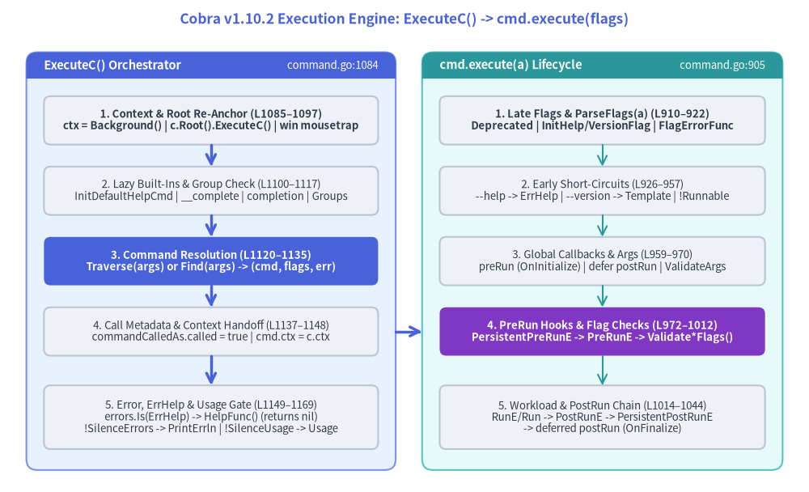
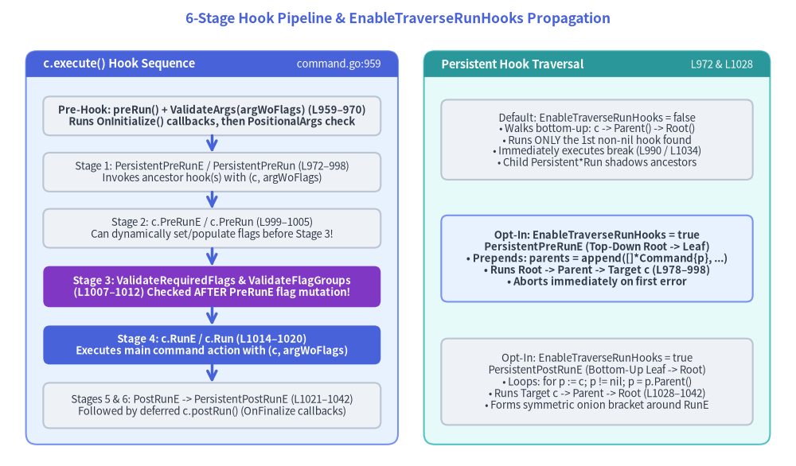

ExecuteC & Command.execute() Lifecycle Engine (command.go:905–1314, command_win.go)
Once a Cobra CLI is constructed, execution enters through one of four public methods on *Command—Execute(), ExecuteC(), ExecuteContext(ctx), or ExecuteContextC(ctx) (command.go:1062–1084). All four funnel into a two-phase engine:
ExecuteC()(command.go:1084–1170): Tree-level orchestration—normalizingcontext.Context, re-anchoring execution toc.Root(), running the Windowsmousetrapcheck, lazily injecting built-in commands (help,__complete,completion), verifying command group invariants, dispatchingTraverseorFind, and formatting top-level errors orflag.ErrHelp.c.execute(a []string)(command.go:905–1045): Node-level lifecycle execution—registering late--helpand--versionflags, runningParseFlags(a), firingOnInitialize/OnFinalizecallbacks, validating positional arguments viaValidateArgs, and running the 6-stage hook and flag-validation pipeline.

Source Code
from drawlib.canvas import save, setup
from drawlib.lines import line
from drawlib.shapes import rectangle
from drawlib.smartarts import Panel
from drawlib.styles import Styles
from drawlib.text import text
setup(width=184, height=112)
text(
(92, 107.5),
"Cobra v1.10.2 Execution Engine: ExecuteC() -> cmd.execute(flags)",
style=Styles.PrimaryBold.patch(text_size=12.5),
)
# Left Panel: ExecuteC() Tree Orchestrator
Panel(
"ExecuteC() Orchestrator",
"command.go:1084",
style=Styles.PrimaryNeutral,
header_style=Styles.PrimaryFlat,
text_style=Styles.WhiteBold.patch(text_size=10.5),
description_style=Styles.White.patch(text_size=9.5),
header_height=6.0,
).draw((6, 5), width=84, height=95)
rectangle(
(48, 84.5),
width=76,
height=11.0,
style=Styles.Neutral.patch(shape_r=1.5),
text="1. Context & Root Re-Anchor (L1085–1097)\nctx = Background() | c.Root().ExecuteC() | win mousetrap",
text_style=Styles.DarkBold.patch(text_size=9.5),
)
rectangle(
(48, 68.5),
width=76,
height=11.0,
style=Styles.Neutral.patch(shape_r=1.5),
text="2. Lazy Built-Ins & Group Check (L1100–1117)\nInitDefaultHelpCmd | __complete | completion | Groups",
text_style=Styles.Dark.patch(text_size=9.5),
)
rectangle(
(48, 52.5),
width=76,
height=11.0,
style=Styles.PrimaryFlat.patch(shape_r=1.5),
text="3. Command Resolution (L1120–1135)\nTraverse(args) or Find(args) -> (cmd, flags, err)",
text_style=Styles.WhiteBold.patch(text_size=9.5),
)
rectangle(
(48, 36.5),
width=76,
height=11.0,
style=Styles.Neutral.patch(shape_r=1.5),
text="4. Call Metadata & Context Handoff (L1137–1148)\ncommandCalledAs.called = true | cmd.ctx = c.ctx",
text_style=Styles.Dark.patch(text_size=9.5),
)
rectangle(
(48, 17.0),
width=76,
height=14.5,
style=Styles.Neutral.patch(shape_r=1.5),
text="5. Error, ErrHelp & Usage Gate (L1149–1169)\nerrors.Is(ErrHelp) -> HelpFunc() (returns nil)\n!SilenceErrors -> PrintErrln | !SilenceUsage -> Usage",
text_style=Styles.Dark.patch(text_size=9.5),
)
line((48, 79.0), (48, 74.0), arrow_head="->", style=Styles.PrimaryBold)
line((48, 63.0), (48, 58.0), arrow_head="->", style=Styles.PrimaryBold)
line((48, 47.0), (48, 42.0), arrow_head="->", style=Styles.PrimaryBold)
line((48, 31.0), (48, 24.25), arrow_head="->", style=Styles.PrimaryBold)
# Right Panel: cmd.execute(flags) Lifecycle
Panel(
"cmd.execute(a) Lifecycle",
"command.go:905",
style=Styles.SecondaryNeutral,
header_style=Styles.SecondaryFlat,
text_style=Styles.WhiteBold.patch(text_size=10.5),
description_style=Styles.White.patch(text_size=9.5),
header_height=6.0,
).draw((96, 5), width=82, height=95)
rectangle(
(137, 84.5),
width=74,
height=11.0,
style=Styles.Neutral.patch(shape_r=1.5),
text="1. Late Flags & ParseFlags(a) (L910–922)\nDeprecated | InitHelp/VersionFlag | FlagErrorFunc",
text_style=Styles.DarkBold.patch(text_size=9.5),
)
rectangle(
(137, 68.5),
width=74,
height=11.0,
style=Styles.Neutral.patch(shape_r=1.5),
text="2. Early Short-Circuits (L926–957)\n--help -> ErrHelp | --version -> Template | !Runnable",
text_style=Styles.Dark.patch(text_size=9.5),
)
rectangle(
(137, 52.5),
width=74,
height=11.0,
style=Styles.Neutral.patch(shape_r=1.5),
text="3. Global Callbacks & Args (L959–970)\npreRun (OnInitialize) | defer postRun | ValidateArgs",
text_style=Styles.Dark.patch(text_size=9.5),
)
rectangle(
(137, 36.5),
width=74,
height=11.0,
style=Styles.AccentFlat.patch(shape_r=1.5),
text="4. PreRun Hooks & Flag Checks (L972–1012)\nPersistentPreRunE -> PreRunE -> Validate*Flags()",
text_style=Styles.WhiteBold.patch(text_size=9.5),
)
rectangle(
(137, 17.0),
width=74,
height=14.5,
style=Styles.Neutral.patch(shape_r=1.5),
text="5. Workload & PostRun Chain (L1014–1044)\nRunE/Run -> PostRunE -> PersistentPostRunE\n-> deferred postRun (OnFinalize)",
text_style=Styles.Dark.patch(text_size=9.5),
)
line((137, 79.0), (137, 74.0), arrow_head="->", style=Styles.Secondary)
line((137, 63.0), (137, 58.0), arrow_head="->", style=Styles.Secondary)
line((137, 47.0), (137, 42.0), arrow_head="->", style=Styles.Secondary)
line((137, 31.0), (137, 24.25), arrow_head="->", style=Styles.Secondary)
# Cross-panel invocation arrow
line((90, 36.5), (96, 36.5), arrow_head="->", style=Styles.PrimaryBold)
save()
1. Phase 1: ExecuteC() Tree-Level Orchestration (command.go:1062–1170)
1.1 The Four Public Entrypoints (command.go:1062–1084)
func (c *Command) ExecuteContext(ctx context.Context) error {
c.ctx = ctx
return c.Execute()
}
func (c *Command) Execute() error {
_, err := c.ExecuteC()
return err
}
func (c *Command) ExecuteContextC(ctx context.Context) (*Command, error) {
c.ctx = ctx
return c.ExecuteC()
}
All four methods converge on ExecuteC() (cmd *Command, err error) (command.go:1084), which executes 10 sequential steps:
| Step | Source Lines | Operation Performed | Architectural Rationale |
|---|---|---|---|
1. Default ctx |
command.go:1085–1087 |
if c.ctx == nil { c.ctx = context.Background() } |
Guarantees cmd.Context() is never nil inside ValidArgsFunction or *Run* hooks after Execute() starts. |
| 2. Root Re-Anchoring | command.go:1090–1092 |
if c.HasParent() { return c.Root().ExecuteC() } |
Even if the caller invokes subCmd.Execute(), Cobra climbs to Root() so os.Args[1:] is always parsed from the top of the tree. |
3. Windows preExecHookFn |
command.go:1095–1097command_win.go:28–41 |
if preExecHookFn != nil { preExecHookFn(c) } |
On Windows (//go:build windows), calls mousetrap.StartedByExplorer(). If launched from explorer.exe and MousetrapHelpText != "", prints warning, sleeps MousetrapDisplayDuration (5s) or waits for fmt.Scanln(), and calls os.Exit(1). (nil on !windows in command_notwin.go:20.) |
4. InitDefaultHelpCmd() |
command.go:1100command.go:1263–1314 |
Lazily creates and attaches c.helpCommand (help [command]) if c.HasSubCommands() is true |
Deferred until execution so application code can override SetHelpCommand or SetHelpCommandGroupID after AddCommand. Calls RemoveCommand + AddCommand (L1312–1313). |
5. CLI args Selection (#155) |
command.go:1102–1107 |
args := c.argsif c.args == nil && filepath.Base(os.Args[0]) != "cobra.test" { args = os.Args[1:] } |
Uses explicit SetArgs(a) slice when provided; otherwise reads os.Args[1:] while ignoring -test.v flags passed to Cobra's own cobra.test binary during go test -v. |
6. __complete Injection |
command.go:1110completions.go:195 |
c.initCompleteCmd(args) |
Lazily injects hidden __complete and __completeNoDesc subcommands only when args[0] invokes completion. |
7. completion Injection |
command.go:1113shell_completions.go:29 |
c.InitDefaultCompletionCmd(args...) |
Lazily adds completion [bash|zsh|fish|powershell] unless CompletionOptions.DisableDefaultCmd is set or there are no subcommands. |
8. checkCommandGroups() |
command.go:1117command.go:1205–1214 |
Recursively verifies sub.GroupID == "" || c.ContainsGroup(sub.GroupID) |
Panics immediately (panic(fmt.Sprintf("group id '%s' is not defined for subcommand '%s'", ...))) if any subcommand references an unregistered GroupID. |
9. Traverse vs. Find |
command.go:1120–1135 |
Dispatches c.Traverse(args) or c.Find(args); on error, prints c.ErrPrefix() + "Run '%v --help' for usage.\n" unless c.SilenceErrors |
Resolves target cmd and remaining flags slice (see Chapter 2). |
10. cmd.execute(flags) & Error Gate |
command.go:1137–1169 |
Sets cmd.commandCalledAs.called = true, propagates cmd.ctx = c.ctx, runs cmd.execute(flags), and formats ErrHelp / errors / usage |
Centralizes flag.ErrHelp interception, SilenceErrors, and SilenceUsage inheritance. |
1.2 Post-Execution Error, ErrHelp, and Usage Handling (command.go:1148–1169)
When err = cmd.execute(flags) returns a non-nil error (command.go:1149), ExecuteC() applies three distinct policies in strict order:
err = cmd.execute(flags)
if err != nil {
// Always show help if requested, even if SilenceErrors is in
// effect
if errors.Is(err, flag.ErrHelp) {
cmd.HelpFunc()(cmd, args)
return cmd, nil
}
// If root command has SilenceErrors flagged,
// all subcommands should respect it
if !cmd.SilenceErrors && !c.SilenceErrors {
c.PrintErrln(cmd.ErrPrefix(), err.Error())
}
// If root command has SilenceUsage flagged,
// all subcommands should respect it
if !cmd.SilenceUsage && !c.SilenceUsage {
c.Println(cmd.UsageString())
}
}
return cmd, err
flag.ErrHelpAlways Renders Help and Clearserr(L1152–1155): Whether triggered by--help/-h(L935) or by invoking a non-runnable parent command (!c.Runnable()atL956),ExecuteCcallscmd.HelpFunc()(cmd, args)(which writes tocmd.OutOrStdout(), see issue#1002atL495) and returnscmd, nil, even whenSilenceErrors: true.- Root-Inherited
SilenceErrors(L1159–1161): Error output (c.PrintErrln(cmd.ErrPrefix(), err.Error())) is suppressed if either the resolvedcmd.SilenceErrorsor the rootc.SilenceErrorsistrue. Note thatcmd.ErrPrefix()(L643–652) climbs the parent chain looking for a customSetErrPrefixstring before defaulting to"Error:". - Root-Inherited
SilenceUsage(L1165–1167): Usage output (c.Println(cmd.UsageString())) is suppressed if eithercmd.SilenceUsageorc.SilenceUsageistrue.
2. Phase 2: Command.execute(a []string) & the 6-Stage Hook Pipeline (command.go:905–1045)
Inside c.execute(a []string) (command.go:905), Cobra transitions from tree resolution to single-command execution. The exact ordering of operations inside c.execute is one of the most important architectural contracts in Cobra:

Source Code
from drawlib.canvas import save, setup
from drawlib.lines import line
from drawlib.shapes import rectangle
from drawlib.smartarts import Panel
from drawlib.styles import Styles
from drawlib.text import text
setup(width=184, height=108)
text(
(92, 103.5),
"6-Stage Hook Pipeline & EnableTraverseRunHooks Propagation",
style=Styles.PrimaryBold.patch(text_size=12.5),
)
# Left Panel: 6-Stage Hook & Validation Sequence
Panel(
"c.execute() Hook Sequence",
"command.go:959",
style=Styles.PrimaryNeutral,
header_style=Styles.PrimaryFlat,
text_style=Styles.WhiteBold.patch(text_size=10.5),
description_style=Styles.White.patch(text_size=9.5),
header_height=6.0,
).draw((6, 5), width=86, height=91)
rectangle(
(49, 81.0),
width=78,
height=9.0,
style=Styles.Neutral.patch(shape_r=1.5),
text="Pre-Hook: preRun() + ValidateArgs(argWoFlags) (L959–970)\nRuns OnInitialize() callbacks, then PositionalArgs check",
text_style=Styles.DarkBold.patch(text_size=9.5),
)
rectangle(
(49, 68.0),
width=78,
height=9.0,
style=Styles.Neutral.patch(shape_r=1.5),
text="Stage 1: PersistentPreRunE / PersistentPreRun (L972–998)\nInvokes ancestor hook(s) with (c, argWoFlags)",
text_style=Styles.Dark.patch(text_size=9.5),
)
rectangle(
(49, 55.0),
width=78,
height=9.0,
style=Styles.Neutral.patch(shape_r=1.5),
text="Stage 2: c.PreRunE / c.PreRun (L999–1005)\nCan dynamically set/populate flags before Stage 3!",
text_style=Styles.Dark.patch(text_size=9.5),
)
rectangle(
(49, 41.5),
width=78,
height=9.5,
style=Styles.AccentFlat.patch(shape_r=1.5),
text="Stage 3: ValidateRequiredFlags & ValidateFlagGroups\n(L1007–1012) Checked AFTER PreRunE flag mutation!",
text_style=Styles.WhiteBold.patch(text_size=9.5),
)
rectangle(
(49, 28.0),
width=78,
height=9.0,
style=Styles.PrimaryFlat.patch(shape_r=1.5),
text="Stage 4: c.RunE / c.Run (L1014–1020)\nExecutes main command action with (c, argWoFlags)",
text_style=Styles.WhiteBold.patch(text_size=9.5),
)
rectangle(
(49, 14.0),
width=78,
height=10.5,
style=Styles.Neutral.patch(shape_r=1.5),
text="Stages 5 & 6: PostRunE -> PersistentPostRunE (L1021–1042)\nFollowed by deferred c.postRun() (OnFinalize callbacks)",
text_style=Styles.Dark.patch(text_size=9.5),
)
line((49, 76.5), (49, 72.5), arrow_head="->", style=Styles.PrimaryBold)
line((49, 63.5), (49, 59.5), arrow_head="->", style=Styles.PrimaryBold)
line((49, 50.5), (49, 46.25), arrow_head="->", style=Styles.PrimaryBold)
line((49, 36.75), (49, 32.5), arrow_head="->", style=Styles.PrimaryBold)
line((49, 23.5), (49, 19.25), arrow_head="->", style=Styles.PrimaryBold)
# Right Panel: EnableTraverseRunHooks Comparison
Panel(
"Persistent Hook Traversal",
"L972 & L1028",
style=Styles.SecondaryNeutral,
header_style=Styles.SecondaryFlat,
text_style=Styles.WhiteBold.patch(text_size=10.5),
description_style=Styles.White.patch(text_size=9.5),
header_height=6.0,
).draw((98, 5), width=80, height=91)
rectangle(
(138, 75.5),
width=72,
height=18.5,
style=Styles.Neutral.patch(shape_r=1.5),
text="Default: EnableTraverseRunHooks = false\n• Walks bottom-up: c -> Parent() -> Root()\n• Runs ONLY the 1st non-nil hook found\n• Immediately executes break (L990 / L1034)\n• Child Persistent*Run shadows ancestors",
text_style=Styles.Dark.patch(text_size=9.5),
)
rectangle(
(138, 48.0),
width=72,
height=20.0,
style=Styles.PrimaryNeutral.patch(shape_r=1.5),
text="Opt-In: EnableTraverseRunHooks = true\nPersistentPreRunE (Top-Down Root -> Leaf)\n• Prepends: parents = append([]*Command{p}, ...)\n• Runs Root -> Parent -> Target c (L978–998)\n• Aborts immediately on first error",
text_style=Styles.DarkBold.patch(text_size=9.5),
)
rectangle(
(138, 19.5),
width=72,
height=20.0,
style=Styles.Neutral.patch(shape_r=1.5),
text="Opt-In: EnableTraverseRunHooks = true\nPersistentPostRunE (Bottom-Up Leaf -> Root)\n• Loops: for p := c; p != nil; p = p.Parent()\n• Runs Target c -> Parent -> Root (L1028–1042)\n• Forms symmetric onion bracket around RunE",
text_style=Styles.Dark.patch(text_size=9.5),
)
save()
2.1 Late Flag Registration, ParseFlags, and Early Exits (command.go:906–957)
Before touching any hooks or validators, c.execute(a []string) performs six setup and short-circuit checks:
- Deprecation Notice (
L910–912):
Note thatif len(c.Deprecated) > 0 { c.Printf("Command %q is deprecated, %s\n", c.Name(), c.Deprecated) }c.Printfwrites toc.OutOrStderr()(command.go:1435–1447), which defaults toos.StderrunlessSetOutwas called. - Just-in-Time
--helpand--versionFlag Injection (L916–917,L1219–1258):c.InitDefaultHelpFlag()callsc.mergePersistentFlags()and, ifc.Flags().Lookup("help") == nil, registers--help/-h(BoolP) with annotationFlagSetByCobraAnnotation: []string{"true"}.c.InitDefaultVersionFlag()checksif c.Version == "" { return }. Ifc.Versionis non-empty andc.Flags().Lookup("version") == nil, it registers--version—adding the-vshorthand only ifc.Flags().ShorthandLookup("v") == nil(L1251–1255) so user-defined-v(e.g.,--verbose) is never overwritten.
- Final Flag Parsing &
FlagErrorFunc(L919–922):err = c.ParseFlags(a) if err != nil { return c.FlagErrorFunc()(c, err) }c.ParseFlags(a)(command.go:1868–1889) returnsnilimmediately ifc.DisableFlagParsingistrue. Otherwise it merges persistent flags, copiesc.FParseErrWhitelistintoc.Flags().ParseErrorsAllowlist, and runsc.Flags().Parse(a). Ifpflagemits deprecation warnings intoc.flagErrorBufwithout returning an error,ParseFlagsprints them (L1884–1886). On error,c.FlagErrorFunc()(L547–558) climbs the parent chain to invoke any custom flag-error transformer. --helpShort-Circuit (L926–936): ReadshelpVal, err := c.Flags().GetBool(helpFlagName). IfhelpValistrue, returnsflag.ErrHelpimmediately (handled inExecuteCatL1152).--versionShort-Circuit (L939–953): Ifc.Version != ""andc.Flags().GetBool("version")istrue, resolvesfn := c.getVersionTemplateFunc()(L631–640, usingdefaultVersionFuncunlessSetVersionTemplatewas called) and writes"%s version %s\n"toc.OutOrStdout(), returning before anyOnInitializeor*Run*hooks execute.- Non-Runnable Command Short-Circuit (
L955–957):
A command is runnable (if !c.Runnable() { return flag.ErrHelp }L1595–1598) iffc.Run != nil || c.RunE != nil. Invoking a pure grouping command returnsflag.ErrHelp, causingExecuteCto print its help text and returnnil.
2.2 Global OnInitialize / OnFinalize and Early ValidateArgs (command.go:959–970)
Once c.execute confirms the command is runnable and neither --help nor --version was requested, it runs:
c.preRun()
defer c.postRun()
argWoFlags := c.Flags().Args()
if c.DisableFlagParsing {
argWoFlags = a
}
if err := c.ValidateArgs(argWoFlags); err != nil {
return err
}
[!IMPORTANT] Two Subtle Ordering Guarantees (
command.go:959–970):
OnFinalizeRuns viadefer(L961):c.preRun()(L1047–1051) executes everyfunc()registered viacobra.OnInitialize(...)(cobra.go:99–101). Immediately afterward,defer c.postRun()(L961,L1053–1057) schedules everyfunc()registered viacobra.OnFinalize(...)(cobra.go:104–107). Because it is deferred atL961,OnFinalizecallbacks are guaranteed to run even ifValidateArgs,PersistentPreRunE,PreRunE,ValidateRequiredFlags,ValidateFlagGroups, orRunEreturns an error.ValidateArgsRuns BEFOREPersistentPreRunEandPreRunE(L968): Positional argument validation (c.ValidateArgs(argWoFlags)atL1172–1177, which callsArbitraryArgsifc.Args == nil, orc.Args(c, args)) executes before Stage 1 (PersistentPreRunE) and Stage 2 (PreRunE). In contrast, required-flag and flag-group validations (ValidateRequiredFlagsandValidateFlagGroups) execute after Stage 2 (PreRunE) atL1007–1012!
3. Detailed Walkthrough of the 6-Stage Hook Pipeline (command.go:972–1042)
3.1 Stage 1: PersistentPreRunE / PersistentPreRun (command.go:972–998)
parents := make([]*Command, 0, 5)
for p := c; p != nil; p = p.Parent() {
if EnableTraverseRunHooks {
// When EnableTraverseRunHooks is set:
// - Execute all persistent pre-runs from the root parent till this command.
// - Execute all persistent post-runs from this command till the root parent.
parents = append([]*Command{p}, parents...)
} else {
// Otherwise, execute only the first found persistent hook.
parents = append(parents, p)
}
}
for _, p := range parents {
if p.PersistentPreRunE != nil {
if err := p.PersistentPreRunE(c, argWoFlags); err != nil {
return err
}
if !EnableTraverseRunHooks {
break
}
} else if p.PersistentPreRun != nil {
p.PersistentPreRun(c, argWoFlags)
if !EnableTraverseRunHooks {
break
}
}
}
Notice two critical details in Stage 1:
- Receiver vs.
cmdArgument: Even whenpis an ancestor command (e.g.,rootCmd),p.PersistentPreRunE(c, argWoFlags)is passedc(the target leaf*Command), notp. EnableTraverseRunHooks(cobra.go:66):- When
false(default):parentsis ordered bottom-up[c, parent, ..., root]. The loop executes the first non-nilPersistentPreRunEorPersistentPreRunit encounters and immediatelybreaks (L990,L995). Thus, definingPersistentPreRunon a child command shadows its parent'sPersistentPreRununlessEnableTraverseRunHooks = true. - When
true:parentsis constructed by prepending (append([]*Command{p}, parents...)), yielding top-down order[root, ..., parent, c], and all defined hooks execute sequentially from root to leaf.
- When
3.2 Stage 2: PreRunE / PreRun (command.go:999–1005)
Next, Cobra executes the target command's local pre-run hook:
if c.PreRunE != nil {
if err := c.PreRunE(c, argWoFlags); err != nil {
return err
}
} else if c.PreRun != nil {
c.PreRun(c, argWoFlags)
}
At every hook stage (PersistentPreRun*, PreRun*, Run*, PostRun*, PersistentPostRun*), the *E error-returning variant takes strict if / else if precedence over the non-error variant.
3.3 Stage 3: Why ValidateRequiredFlags and ValidateFlagGroups Run After PreRunE (command.go:1007–1012)
if err := c.ValidateRequiredFlags(); err != nil {
return err
}
if err := c.ValidateFlagGroups(); err != nil {
return err
}
Why does Cobra wait until after PersistentPreRunE and PreRunE to validate required flags (command.go:1180–1201) and relational flag groups (flag_groups.go:200)?
- In real-world Cobra + Viper applications, developers bind configuration files, environment variables, or dynamic defaults inside
PersistentPreRunEorPreRunEby callingcmd.Flags().Set(name, val). - Calling
Flags().Set(...)markspflag.Changed = trueon that flag. - Because
ValidateRequiredFlags()checksif (requiredAnnotation[0] == "true") && !pflag.Changed(command.go:1192) onBashCompOneRequiredFlag, running Stage 3 atL1007–1012allowsPreRunhooks to satisfy required flags and flag groups dynamically beforeRunEstarts!
3.4 Stages 4, 5, and 6: RunE, PostRunE, and PersistentPostRunE (command.go:1014–1042)
if c.RunE != nil {
if err := c.RunE(c, argWoFlags); err != nil {
return err
}
} else {
c.Run(c, argWoFlags)
}
if c.PostRunE != nil {
if err := c.PostRunE(c, argWoFlags); err != nil {
return err
}
} else if c.PostRun != nil {
c.PostRun(c, argWoFlags)
}
for p := c; p != nil; p = p.Parent() {
if p.PersistentPostRunE != nil {
if err := p.PersistentPostRunE(c, argWoFlags); err != nil {
return err
}
if !EnableTraverseRunHooks {
break
}
} else if p.PersistentPostRun != nil {
p.PersistentPostRun(c, argWoFlags)
if !EnableTraverseRunHooks {
break
}
}
}
| Hook Stage | Source Lines | Traversal Direction (EnableTraverseRunHooks = false) |
Traversal Direction (EnableTraverseRunHooks = true) |
|---|---|---|---|
OnInitialize (c.preRun) |
L959, L1047–1051 |
Global initializers slice (0 .. len-1) |
Global initializers slice (0 .. len-1) |
ValidateArgs |
L968, L1172–1177 |
Target command c only |
Target command c only |
1. PersistentPreRun[E] |
L972–998 |
Nearest ancestor with hook (c -> Parent -> Root, break on first) |
Top-Down: Root -> Parent -> c (all non-nil hooks) |
2. PreRun[E] |
L999–1005 |
Target command c only |
Target command c only |
3. ValidateRequiredFlags & ValidateFlagGroups |
L1007–1012 |
Target command c's merged Flags() |
Target command c's merged Flags() |
4. Run[E] |
L1014–1020 |
Target command c only |
Target command c only |
5. PostRun[E] |
L1021–1027 |
Target command c only |
Target command c only |
6. PersistentPostRun[E] |
L1028–1042 |
Nearest ancestor with hook (c -> Parent -> Root, break on first) |
Bottom-Up: c -> Parent -> Root (all non-nil hooks) |
OnFinalize (defer c.postRun) |
L961, L1053–1057 |
Global finalizers slice (0 .. len-1, always runs via defer) |
Global finalizers slice (0 .. len-1, always runs via defer) |